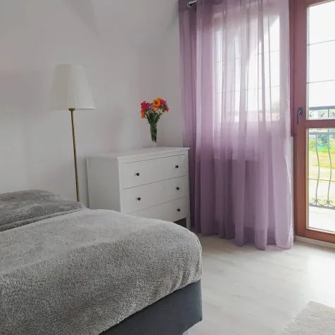
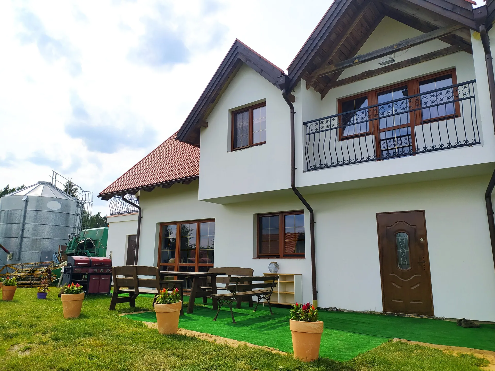
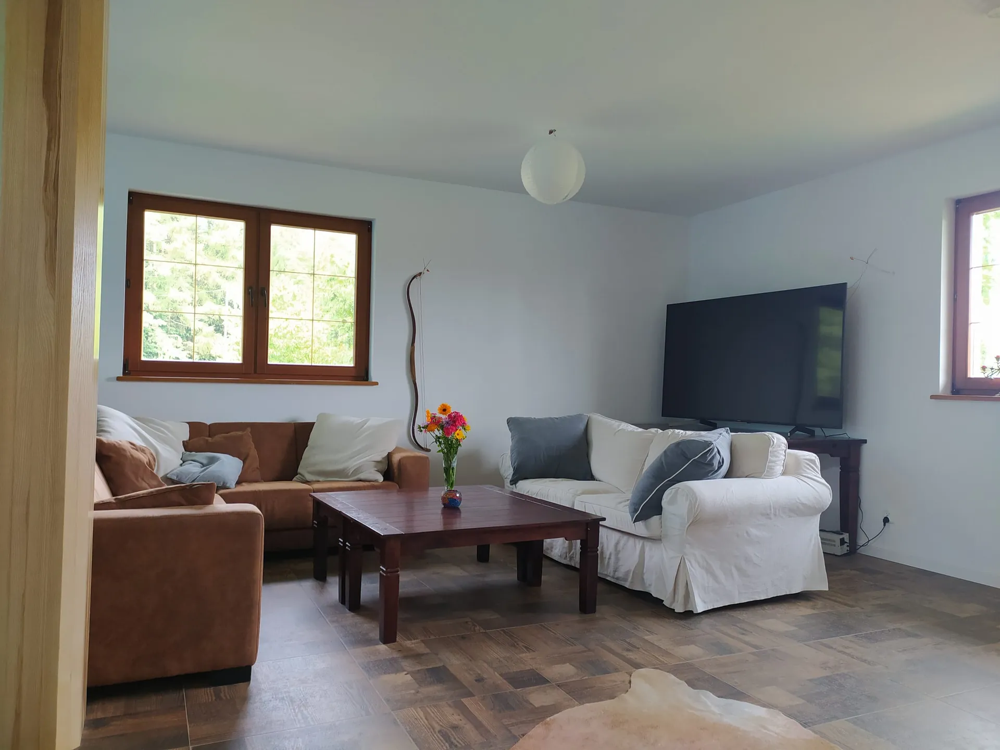
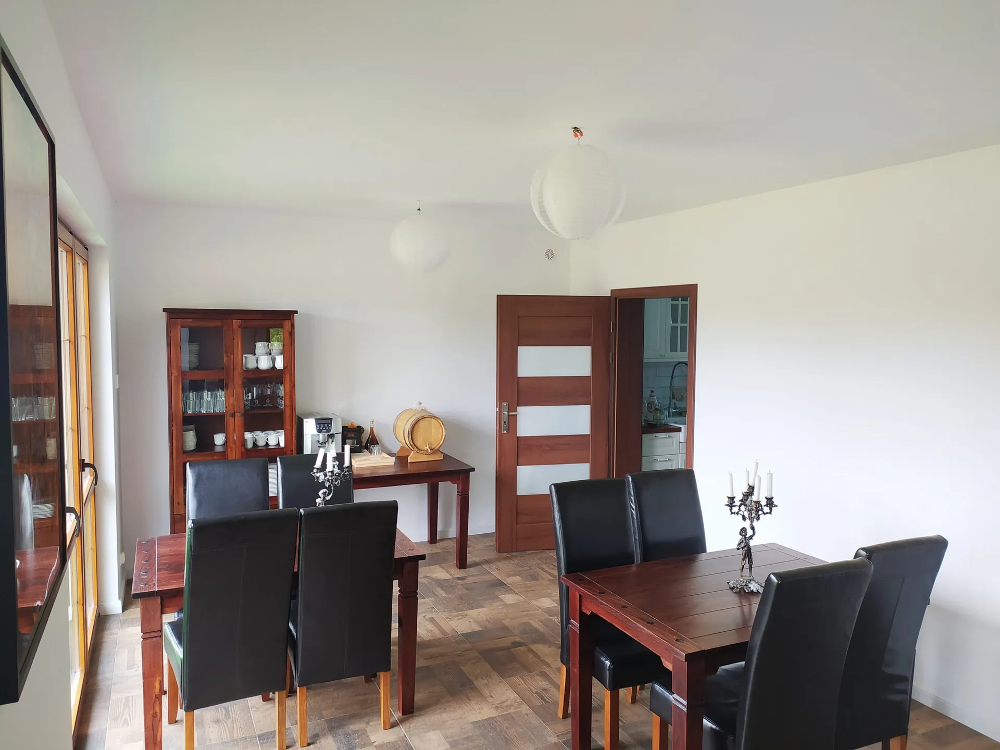

Przytulne sypialnie
Ciepłe, spokojne wnętrza z wygodnymi łóżkami i widokiem na zieleń — idealne na regenerujący sen.
Warmia · Giławy · jeziora i lasy
Pod Silosem to agroturystyka na ekologicznym gospodarstwie — trzy przytulne apartamenty, świeże powietrze, łąki, las i jeziora w zasięgu spaceru.
⭐ 9,4 / 10 na Booking.com · 20 opinii gości
Eko gospodarstwoWitamy u nas
Pod Silosem mieści się na terenie proekologicznego gospodarstwa rolnego w Giławach na Warmii. Prowadzimy uprawy warzyw oraz hodowlę kur — wszystko w zgodzie z naturą i bez pośpiechu.
To miejsce dla tych, którzy chcą zwolnić: posłuchać ciszy, popatrzeć na łąki i las za oknem, a wieczorem usiąść przy kominku. Idealne na rodzinny wypoczynek, wyjazd ze znajomymi lub pracę zdalną z widokiem na pola.
Nasze wnętrza
Nowocześnie urządzone, jasne i wygodne. Możesz wynająć pojedynczy apartament albo cały dom dla większej grupy.

Ciepłe, spokojne wnętrza z wygodnymi łóżkami i widokiem na zieleń — idealne na regenerujący sen.

Przestronna część wspólna z miękkimi sofami i kominkiem — miejsce na wieczory z rodziną i znajomymi.

Duży stół i przestrzeń, by zjeść razem, bez pośpiechu. Posiłki można dodatkowo wykupić na miejscu.
Co robić w okolicy
Las, łąki i jeziora w zasięgu spaceru. Tu każda pora roku ma coś do zaoferowania.
Łąki, ścieżki leśne i czyste powietrze.
Pobliskie jeziora na relaks nad wodą.
Spokojne łowiska dla miłośników ryb.
Możliwa w pobliskich stajniach.
Korty w niedalekiej okolicy.
Wieczory na świeżym powietrzu.
Mapy dojazdowe
Kliknij „Wyznacz trasę", a telefon poprowadzi Cię prosto z gospodarstwa.
Spokojne zejście do wody nad jeziorem Serwent, idealne na kąpiel i odpoczynek. 🚗 Dojazd: ostatnie 150 m trzymaj się lewej strony.
Wyznacz trasę →Przyjemne miejsce nad jeziorem Gąsiorowskim — kąpiel, słońce i odpoczynek. 🚗 Dojazd: po zjeździe z asfaltu skręć w prawo, następnie w lewo.
Wyznacz trasę →Żelbetowy schron bierny piechoty z lat 1937–1939, jeden z ok. 120 obiektów niemieckiej Pozycji Olsztynieckiej — terenowa ciekawostka dla miłośników historii. 🌲 Ukryty w terenie — wygodne obuwie mile widziane.
Wyznacz trasę →Na dwóch kółkach
Oznakowany szlak prowadzi tuż obok naszego gospodarstwa — wsiadasz na rower i jedziesz. Mapa pokazuje leśne drogi i kolorowe szlaki, których nie zobaczysz w Google.
Lokalny szlak prowadzący tuż obok naszego gospodarstwa — pętla przez okoliczne wsie, pola i lasy Warmii. Nasza trasa „od progu”. 📏 ~25 km · ⏱ ok. 2,5 h · średni
Pokaż trasę na mapie →Szlak śladami dawnych umocnień — rowerową wycieczkę połączysz ze zwiedzaniem schronów, jak nasz pobliski bunkier. 📏 ~24 km · ⏱ ok. 2,5 h · średni
Pokaż trasę na mapie →Trasa w stronę malowniczego jeziora Kalwa pod Pasymiem — woda, lasy i warmińskie widoki. Dla ambitnych rowerzystów. 📏 ~21 km · ⏱ ok. 2 h · średni
Pokaż trasę na mapie →Zobacz sam
Opinie gości
„Wszystko ok. Miejsce piękne, gospodarze przemili, super jedzenie."
„Przepyszne śniadanka! Menu dla dzieci! Przepiękna okolica."
„Rewelka, super posiłki, opieka oraz otoczenie."
„Okolica, siedlisko, przemili gospodarze."
„Bardzo mili gospodarze. Świetne miejsce."
„Super miejsce na złapanie oddechu."
Cytaty pochodzą z opinii gości opublikowanych w serwisie Booking.com.
Cennik
Pobyt minimum 2 noce. Dla mniejszych grup ceny do uzgodnienia — zadzwoń, dogadamy się.
360 zł/ noc
do 14osób
Kontakt i rezerwacja
Napisz lub zadzwoń — chętnie odpowiemy na pytania i pomożemy dobrać termin oraz apartament.